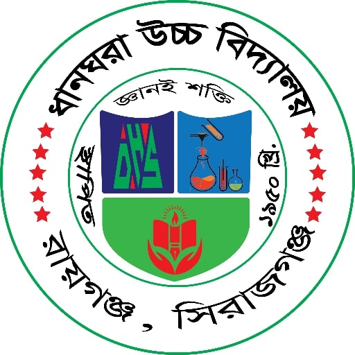
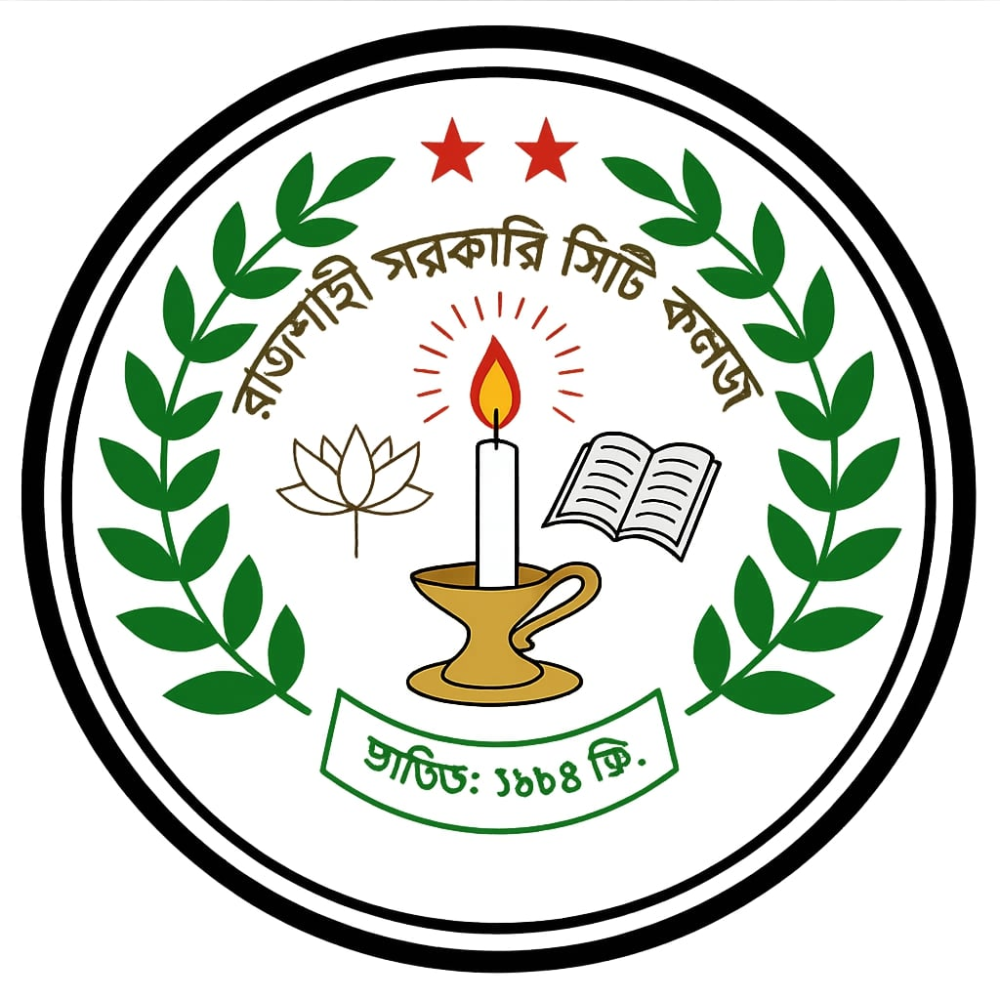
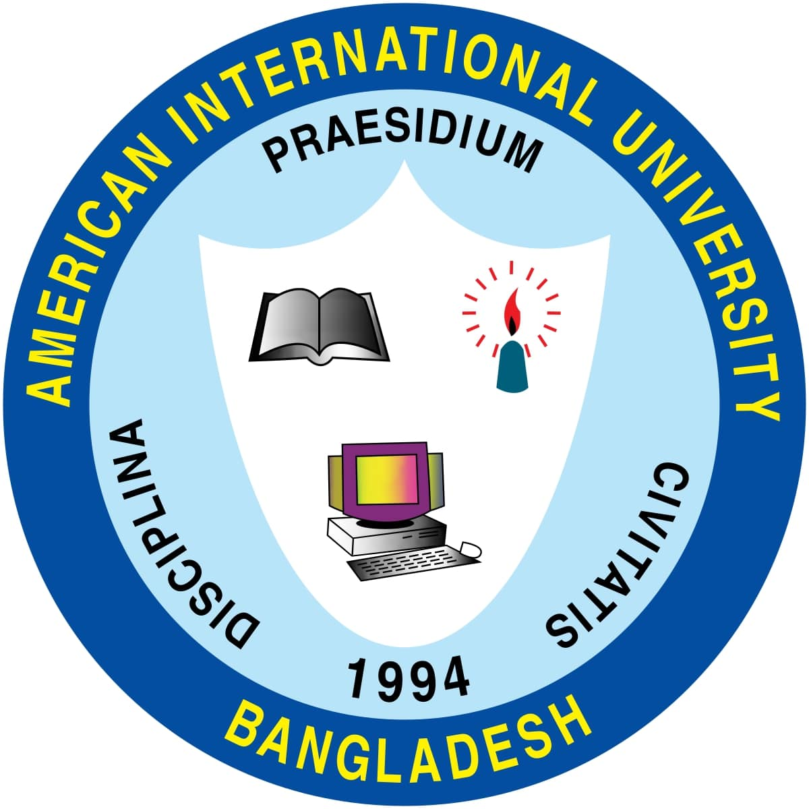

Secondary School Certificate (SSC)
Dhangora Model High School
Year of Completion: 2017.
I completed my SSC at Dhangora Model High School with a GPA of 5.00, ranking among the top performers in my
class. In addition to excelling academically, I was actively engaged in scouting activities.
As a committed scout, I participated in school-level, area-level, and national-level events, including the
National Scout event in Panchagarh in 2012. These experiences helped me develop leadership, teamwork, and
problem-solving skills, which continue to influence my personal and professional growth.

Higher Secondary Certificate (HSC)
Rajshahi Govt. City College
Year of Completion: 2019.
I graduated from Rajshahi Govt. City College, achieving a perfect GPA of 5.00 in my HSC examinations. My
focus was on science, where I excelled in subjects like Mathematics, Physics, and Chemistry. My time here
not only strengthened my academic skills but also shaped my analytical and problem-solving abilities, which
I continue to apply in my university studies and projects.

Bachelor of Science in Computer Science and Engineering
American International University-Bangladesh (AIUB)
Status: Current Student.
I am currently pursuing my Bachelor's degree in Computer Science and Engineering at AIUB. This program has
provided me with a strong foundation in programming, software development, and system design. I have
developed expertise in languages like C++, Python, and Java and gained hands-on experience through projects
such as IT Care Guardians, where I led a team to build a platform simplifying technical services.
In addition to my coursework, I actively participate in university tech workshops and coding hackathons,
constantly striving to broaden my knowledge and skills in the ever-evolving field of computer science.